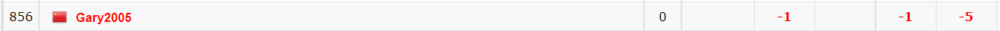

| 采取方法 | 平均耗时(ms) |
|---|---|
map<LL, int> 检查key后查询 |
1366.67 |
map<LL, int> 直接查询 |
2576.07 |
map<pair<LL, LL>, int> 检查key后查询 |
2035.73 |
map<pair<LL, LL>, int> 直接查询 |
3343.33 |
结论：当不确定某次查询是否存在于容器中时，不要直接使用下标查询，而是先使用 count() 或者 find() 方法检查key值。
原因在于，一旦 map 中的一个元素被使用 [] 访问，无论此前是否被赋值，它都被视为已经存在。例如：使用 if(M["abc"]); 查询元素是否存在，则会被自动生成一个二元组 ("abc",zero) ，此时再使用 cout<<M.count("abc"); 答案是存在。
时间一长，就会出现非常多“零值二元组”，白白占用了空间，而由于 map 的复杂度为 $\mathcal O(log S)$ ，这里的 $S$ 为 map 的二元组数量，所以多出来的“零值二元组”会使得下一次查找的复杂度更高。
//不要这样写
int p = mp[i];
//这样写是好的
int q = 0;
if (mp.count(i)) q = mp[i];
#include <bits/stdc++.h>
using namespace std;
mt19937 rnd(time(0));
#define LL long long
const int Case = 15;
map<LL, int> mp;
void Ready() {
for (int i = 1; i <= 1000000; ++ i) {
LL x = rnd();
mp[x] = 1;
}
}
void Solve() {
int num = 0;
for (int i = 1; i <= 1000000; ++ i) {
LL x = rnd();
if (mp.count(x) != 0) {
if (mp[x] = 1) ++ num;
}
}
}
int main() {
freopen("Test.txt", "w", stdout);
Ready();
int T = Case;
double TIME = 0, Tmin = 0x3f3f3f3f, Tmax = 0;
while (T -- > 0) {
cout << "==============\n";
cout << "第" << Case - T << "轮测试：";
double start = clock();
Solve();
double end = clock();
cout << "用时" << end - start << "ms\n";
TIME += end - start;
Tmin = min(Tmin, end - start);
Tmax = max(Tmax, end - start);
}
cout << "\n\n==============\n\n";
cout << "平均耗时为：" << TIME / Case << " ms\n";
cout << "时间浮动区间为：[" << Tmin << ", " << Tmax << "] ms";
return 0;
}
void Solve() {
int num = 0;
for (int i = 1; i <= 1000000; ++ i) {
LL x = rnd();
if (mp[x] = 1) ++ num;
}
}
事情起源来自于2022.07.25的牛客多校3，有一道打卡的最短路题一直超时卡不过去，在我的代码中使用了 map<pair<int, int>, int> 这样的构建方法，在进行上方的测试时我使用了自建结构体替代 pair ，结果意外的发现自建结构体的速度非常快。
| 采取方法 | 平均耗时(ms) |
|---|---|
map<LL, int> |
1366.67 |
map<pair<LL, LL>, int> |
2035.73 |
二参数结构体fff，map<fff, int> |
1485.33 |
map<tuple<LL, LL, LL>, int> |
3194.67 |
三参数结构体fff，map<fff, int> |
1446.27 |
结论：不要使用 pair 或者 tuple 容器构建 map ，而是使用自建结构体。
const int Case = 15;
struct fff {
LL x, y;
friend bool operator < (const fff &a, const fff &b) {
if (a.x != b.x) return a.x < b.x;
return a.y < b.y;
}
};
map<fff, int> mp;
void Ready() {
for (int i = 1; i <= 1000000; ++ i) {
LL x = rnd(), y = rnd();
mp[{x, y}] = 1;
}
}
void Solve() {
int num = 0;
for (int i = 1; i <= 1000000; ++ i) {
LL x = rnd(), y = rnd();
if (mp.count({x, y}) != 0) {
if (mp[{x, y}] = 1) ++ num;
}
}
}
map 与 unordered_map 的选取事情的缘起是许久之前打 Codeforces 时，机缘巧合下发现有个红名大佬爆掉了（下图），顺藤摸瓜发现原因是在于这一场比赛出题人使用了~~极其险恶的~~数据将所有基于哈希的数据结构全部杀死了（例如 $\tt unordered$ 系列）。

赛后有人在评论区分享了出题人这一数据卡哈希的原理，原连接。简单来说就是编译器哈希自带了一些质数倍数，只要给的数据和这些自带的数据冲突，就会让哈希的复杂度从原来的平均 $\mathcal O(1)$ ，最坏 $\mathcal O(N)$ 下降到最坏 $\mathcal O(N^2)$ 。
线上比赛有一定的概率会卡哈希，正式比赛一般不会这么干，所以赛时可以放心使用。
在使用基于哈希的容器（例如 unordered 系列）时，如果将不支持哈希的类型作为 key 值代入，编译器就无法正常运行，这时需要我们为其手写哈希函数。而我们写的这个哈希函数的正确性其实并不是特别重要（但是不可以没有），当发生冲突时编译器会调用 key 的 operator == 函数进行进一步判断。
本部分内容参考自：用struct做unordered_map的key。
pair 、tuple 定义哈希struct hash_pair {
template <class T1, class T2>
size_t operator()(const pair<T1, T2> &p) const {
return hash<T1>()(p.fi) ^ hash<T2>()(p.se);
}
};
unordered_set<pair<int, int>, int, hash_pair> S;
unordered_map<tuple<int, int, int>, int, hash_pair> M;
需要两个条件，一个是在结构体中重载等于号（区别于非哈希容器需要重载小于号，如上所述，当冲突时编译器需要根据重载的等于号判断），第二是写一个哈希函数。注意 hash<>() 的尖括号中的类型匹配。
struct fff {
string x, y;
int z;
friend bool operator == (const fff &a, const fff &b) {
return a.x == b.x || a.y == b.y || a.z == b.z;
}
};
struct hash_fff {
size_t operator()(const fff &p) const {
return hash<string>()(p.x) ^ hash<string>()(p.y) ^ hash<int>()(p.z);
}
};
unordered_map<fff, int, hash_fff> mp;
vector 定义哈希以下两个方法均可。注意 hash<>() 的尖括号中的类型匹配。
struct hash_vector {
size_t operator()(const vector<int> &p) const {
size_t seed = 0;
for (auto it : p) {
seed ^= hash<int>()(it);
}
return seed;
}
};
unordered_map<vector<int>, int, hash_vector> mp;
namespace std {
template<> struct hash<vector<int>> {
size_t operator()(const vector<int> &p) const {
size_t seed = 0;
for (int i : p) {
seed ^= hash<int>()(i) + 0x9e3779b9 + (seed << 6) + (seed >> 2);
}
return seed;
}
};
}
unordered_set<vector<int> > S;
用于防止在线比赛被 hack，下方展示的代码几乎无法被卡，可以放心使用 CodeForces原博客 。
struct myhash {
static uint64_t hash(uint64_t x) {
x += 0x9e3779b97f4a7c15;
x = (x ^ (x >> 30)) * 0xbf58476d1ce4e5b9;
x = (x ^ (x >> 27)) * 0x94d049bb133111eb;
return x ^ (x >> 31);
}
size_t operator()(uint64_t x) const {
static const uint64_t SEED = chrono::steady_clock::now().time_since_epoch().count();
return hash(x + SEED);
}
size_t operator()(pair<uint64_t, uint64_t> x) const {
static const uint64_t SEED = chrono::steady_clock::now().time_since_epoch().count();
return hash(x.first + SEED) ^ (hash(x.second + SEED) >> 1);
}
};